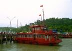

|
On a rencontré pas mal de voyageurs qui venaient du Vietnam et qui étaient déçus par les vietnamiens qu'ils avaient trouvés antipathiques. Et bien pas nous! On est tombé sur des gens accueillants et amicaux et qui ont presque toujours répondu à nos sourires - quand il ne les avaient pas provoqués.
Le Vietnam restera pour nous d'abord Hanoï, la capitale nonchalante. Avec ses rues bondées de scooters, ses trottoirs où les habitants papotent, mangent et font la sieste, son vieux quartier où chaque métier possède sa rue et où chaque rue est dédiée à un métier, et puis surtout son lac si plein de vie avec ses papis en pyjama et ses cafés, permanents ou improvisés, dont les terrasses font le coeur de la ville et sont, avec les marchés, les lieux de rencontres.
Autour d'Hanoï, que de merveilles! Il y a Sapa, où la beauté des vallées couvertes de champs de riz en terrasses a failli nous laisser sur le flanc, avec ses ethnies montagnardes aux coutumes encore préservées -pour combien de temps- et aux vêtements teints à l'indigo. Toujours dans les merveilles naturelles, la baie d'Along bien sûr, avec ses grands "pains de sucre" surgissant de la mer et Catba, l'île qui nous a permis de nous enfouir au fin fond de la jungle avec ses terribles araignées! Mais aussi Hoa Lu, "la baie d'Along terrestre" dans les rizières ou encore la pagode des parfums.
Plus au centre Hué, la cité impériale, ses pagodes, la ville animée mais tellement moins assourdissante qu'Hanoï, les mausolées impériaux qui ont tout d’un grand jardin agréable! Hoi An, toute mignonne, sa campagne, son site Cham, ses maisons charmantes et sa plage familiale. Plus au Sud, Nha Trang, la station balnéaire. Et enfin Saïgon, dynamique, moderne et son delta du Mékong voisin...
Partout, trois points communs: l'eau, les sourires et la campagne. Partout d’attachantes scènes de vie campagnardes qui nous séduisent tant, où s'animent des chapeaux coniques et des palanches. Le temps semble s’y être arrêté. Dommage que ce soit à cause des si nombreuses années de guerres destructrices et sauvages et du communisme qui a isolé et fait régresser ce pays.
Voir le trajet en détail (étapes, durée, coût)
| Hanoï |
|
|
Vendredi 15 juin -
Hier, on a passé la soirée avec Matthieu et Ludivine autour d’une Lao Beer!
C’est rigolo, ils sont partis en novembre et font le tour inverse de nous.
Lire la suite ...
|
| Réflexions en bus |
|
|
Mercredi 20 juin -
On s’est pris la tête avec le gars du bus parce qu’on ne voulait payer que
le prix normal. C’est vraiment compliqué de savoir quoi faire, comment agir
pour le mieux quand on est dans un pays où la situation financière des gens
qu’on côtoie est tellement inférieure à la notre.
Lire la suite ...
|
| Sapa |
|
|
Jeudi 21 juin -
Il pleut sur Sapa, les nuages cachent les belles rizières en terrasses qui
s’offraient hier à la vue de notre chambre. La vallée est mouillée.
Lire la suite ...
|
| Culture à Hanoï |

|
Samedi 23 juin -
Le Vietnam est assez contrasté. J’ai déjà dit que je le trouve à la fois en
avance et en retard par rapport au Laos, ce qui est paradoxal.
Lire la suite ...
|
| Tours organisés autour d'Hanoï |
|
|
Lundi 25 juin, la baie d’Halong terrestre -
Tour organisé à la baie d’Halong terrestre: Hoa Lu et Tam Coc. Le trajet
pour y aller est superbe.
Lire la suite ...
|
| Le lac d'Hanoï |
|
|
Mercredi 27 juin -
Ce matin, lever à l’aube pour profiter de la fraîcheur au bord du lac. Il est
vraiment génial ce lac, toute la ville s’y rencontre.
Lire la suite ...
|
| La baie d'Along |
|

|
Jeudi 28 juin -
Sept heures, c'est parti pour ce que tout le monde nous prédit être le couronnement
de notre séjour à Hanoï: la baie d'Along. Voici le programme de notre troisième
visite organisée.
Lire la suite ...
|
| Adieu Hanoï |
|
|
Dimanche 1er juillet -
Ce soir, on quitte Hanoï. Il faut dire que nos oreilles commencent à souffrir
vraiment du vacarme de la rue.
Lire la suite ...
|
| Hué |
|
|
Lundi 2 juillet -
Malgré les places au fond du bus, la clim purement virtuelle, les amortisseurs
inexistants, les raccords tous les 5 km sur la route (hauts de bien 5 cm) et
les travaux (donc la poussière) tout du long, on arrive vers midi à Hué. Même
pas trop fatigué.
Lire la suite ...
|
| Hoï An |
|
|
Mercredi 4 juillet -
Déjà, le Vietnam est un pays qui s'étire du nord au sud tout en longueur. En
plus, tout le monde voyage avec les fameux billets "open tour", dans les mêmes
bus, avec les mêmes arrêts.
Lire la suite ...
|
| My Son |
|
|
Jeudi 5 juillet -
Une fois de plus, on aurait pu se jouer le plan pépère de la visite organisée.
Mais à bien y réfléchir...
Lire la suite ...
|
| Nha Trang |
|
|
Samedi 7 juillet -
La nuit dans le bus était vraiment pourrie. Les sièges n'étaient pas inclinables,
en skaï bien collant, parfait pour transpirer, les sacs à dos sous les sièges
et dans l'allée pour nous empêcher d'allonger les jambes.
Lire la suite ...
|
| Saigon |
|
|
Mercredi 11 juillet -
Aujourd’hui, on arpente la ville, découvrant les surprises que nous réserve
Saigon. Dix millions d’habitants, plus de deux millions de scooters, quelques
voitures (plus qu’à Hanoï) et camions.
Lire la suite ...
|
| Bus pour Can Tho |
|
|
Jeudi 12 juillet -
C'est parti pour Can Tho, ville du delta du Mékong. Enfin un vrai bus.
Lire la suite ...
|
| Can Tho |
|
|
Vendredi 13 juillet -
Cinq heures du mat' j'ai des frissons, je claque des dents et je monte le son.
Sauf qu'il doit déjà faire 25 degrés et qu'on n'a pas de radio.
Lire la suite ...
|
| Retour à Saïgon |
|
|
Mardi 14 juillet -
Ce soir, normalement, feux d'artifices! Pourvu qu'ils y pensent...
Lire la suite ...
|
La suite du voyage : Le cambodge
|